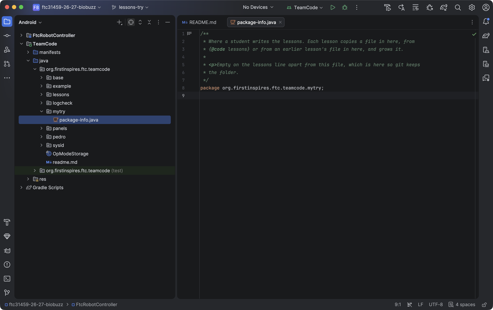
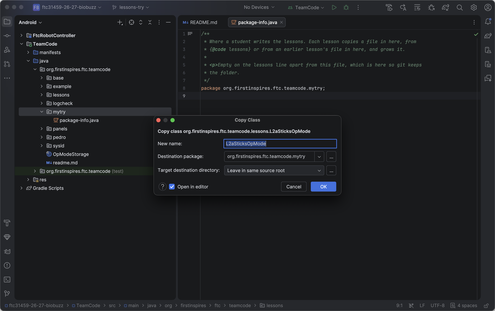
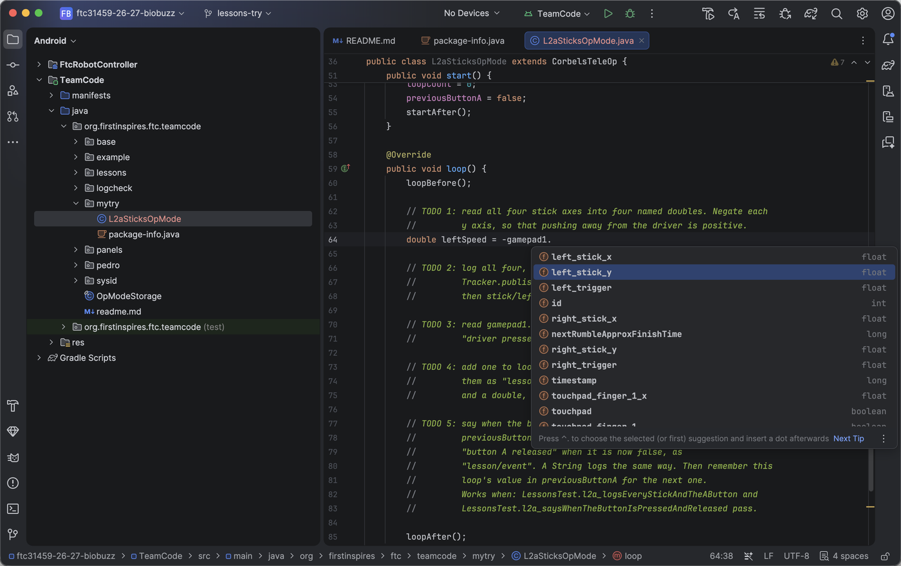
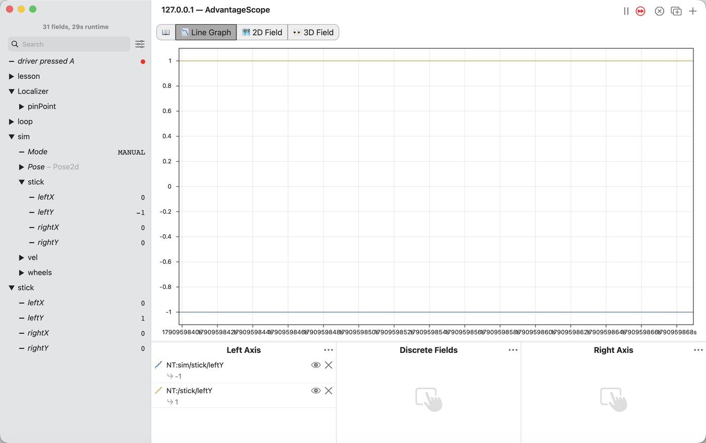
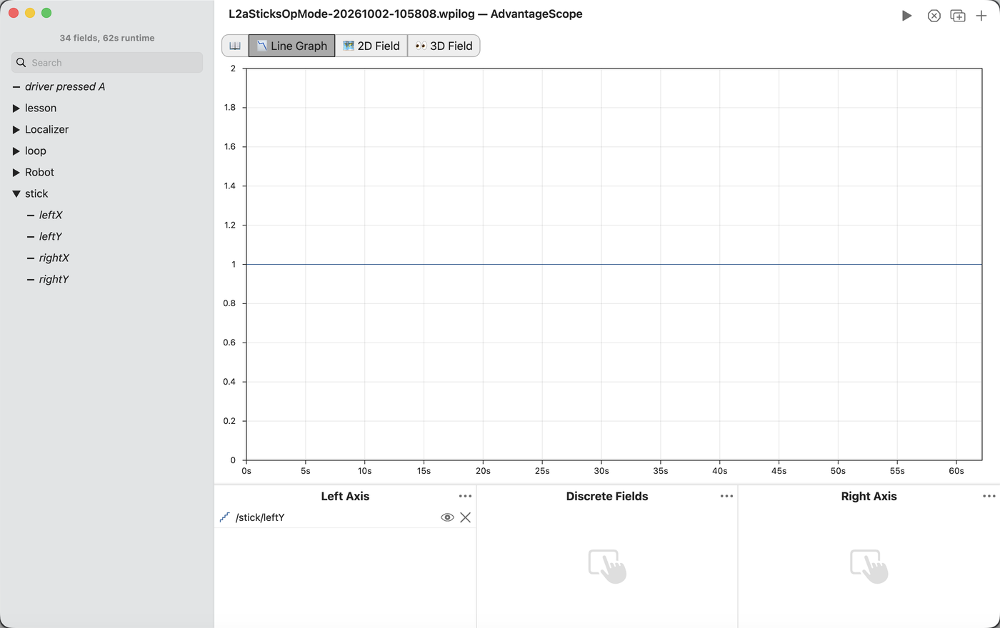

L2a: read the sticks¶
What you will have when this is done¶
You have your own copy of the sticks OpMode, in the mytry folder. It runs in the simulator on the
laptop. AdvantageScope draws the stick while you push it. The flight log keeps the numbers your code
wrote down.
Before you start¶
Android Studio has the project open. Getting it there has no page yet, so ask a mentor.
AdvantageScope is installed on the same laptop.
A gamepad is plugged into the laptop.
No robot is needed. Nothing in this task turns a wheel.
You write in one folder, mytry, inside TeamCode/java/org.firstinspires.ftc.teamcode. The
lessons folder beside it holds the starting files you copy from.

The Project window with org.firstinspires.ftc.teamcode open, showing the lessons folder and the mytry folder with only package-info.java in it.¶
The steps¶
Step 1: copy the starter into mytry¶
Open lessons, click L2aSticksOpMode once, and copy it: ⌘C on a Mac, Ctrl+C on Windows. Fold
lessons up again, click mytry once, and paste.
A box called Copy Class opens. Look at Destination package. It should end in mytry. Then
click OK. If Android Studio asks whether to add the file to Git, click Add.

The Copy Class box with New name L2aSticksOpMode and Destination package org.firstinspires.ftc.teamcode.mytry.¶
You’ll know it worked when mytry holds L2aSticksOpMode, the file is open, and its first line
reads package org.firstinspires.ftc.teamcode.mytry;. Android Studio changed that line for you.
If it didn’t, and Destination package ends in lessons, click Cancel. Click mytry once
more, wait a moment, and paste again.
Step 2: switch your copy on¶
Find the line @Disabled, just under @TeleOp(name = "L2a Sticks", group = "Lessons"). Click on
it and delete the whole line.
@Disabled hides an OpMode from the Driver Station’s list. The starter in lessons keeps it, so
the robot only ever lists your copy.
You’ll know it worked when the line under @TeleOp starts public class L2aSticksOpMode.
Step 3: read the sticks¶
Scroll down to loop() and find TODO 1. Click at the end of its second line and press Enter. Type
this much:
double leftSpeed = -gamepad1.
A list opens with everything a gamepad has. Type left_st and the list shrinks to the left stick.
Move the highlight to left_stick_y with the arrow keys, then press Tab. Type ; to end the line.

The list under gamepad1. after typing left_st, with left_stick_y highlighted.¶
Now hold the pointer still over left_stick_y. A box opens and says what it is: left analog stick
vertical axis. You can do this with any name you are not sure about.
A stick reads a number from -1 to 1. Pushed away from you it reads negative, which is backwards from the way anybody thinks about driving. The minus sign in front fixes that. After it, forward is positive, and it stays that way for every lesson.
Write the other three the same way: rightSpeed from right_stick_y, with a minus sign, and
leftSideways and rightSideways from left_stick_x and right_stick_x, without one.
You’ll know it worked when all four lines are there and none of them has a red underline.
If it didn’t, and a line reads left_stick_x where you meant left_stick_y, the highlight was
on the wrong name when you pressed Tab. The list puts the name you picked last at the top, so it is
not always in the same place. Change the letter by hand.
Step 4: write the numbers down¶
Under TODO 2, type Track. The list shows more than one Tracker. Pick the one from
org.firstinspires.ftc.teamcode.base and press Tab. Android Studio adds the import line for it at
the top of the file.
Then finish the line the way TODO 2 shows: Tracker.publish("stick/leftY", leftSpeed);. Write one
line for each of the other three sticks, with the names TODO 2 gives.
Tracker.publish takes a name and a value, and sends both to Panels and to the flight log. Copy
each name exactly as the TODO spells it.
Fill TODO 3 and TODO 4 the same way. Four kinds of value go out here: a double for a stick, a
boolean for the A button, an int for the loop count, and the seconds as another double.
publish takes all four.
You’ll know it worked when Tracker is not red anywhere, and there is an
import org.firstinspires.ftc.teamcode.base.Tracker; line near the top.
Step 6: build it¶
Open the Build menu and pick the Compile item whose name ends in TeamCode.main. Then click
the hammer on the left edge of the window to open the Build window.
You’ll know it worked when the Build window has a green tick and says BUILD SUCCESSFUL.
Step 7: run it in the simulator¶
Click the Terminal button near the bottom of the left edge. Type this and press Enter:
./gradlew :TeamCode:simRun --args="mytry.L2aSticksOpMode --pad"
You’ll know it worked when it prints Flight log: and a folder, then
mytry.L2aSticksOpMode running., and stays running. The folder is the project’s top folder, the one
that holds README.md.
Step 8: watch the stick live¶
In AdvantageScope, open File > Connect to Simulator > NetworkTables 4. Click Line Graph. The
list on the left has two stick folders. The one inside sim is the gamepad. The one on its own is
what your code published. Open both, and drag each leftY down into Left Axis.
Push the left stick away from you.
You’ll know it worked when both lines move as you push. With the stick all the way forward,
sim/stick/leftY reads -1, the way the gamepad gives it, and your stick/leftY reads 1, after your
minus sign.

AdvantageScope’s Line Graph with NT:sim/stick/leftY drawn at -1 and NT:/stick/leftY drawn at 1.¶
Step 9: read the flight log¶
Click in the Terminal and press Ctrl+C to stop the simulator. In AdvantageScope, open
File > Open Log(s)…, go to the project’s top folder, and open the newest file whose name starts
L2aSticksOpMode. Open stick, and drag leftY into Left Axis.
You’ll know it worked when the line reads 1 while the stick was forward. It is the same
stick/leftY you watched live, kept in a file you can open again later.

AdvantageScope’s Line Graph of the flight log with /stick/leftY in Left Axis, drawn at 1.¶
Step 10: run it on the robot¶
To do
Sending your copy to the robot and running L2a Sticks from the Driver Station is not written yet.
What you just did¶
loop runs over and over, from PLAY until STOP, and each pass is one look at the gamepad. Your code
read the four sticks and the A button, turned forward into a positive number, and wrote each value
down under a name. AdvantageScope showed the stick the way the gamepad reports it beside the value
your code wrote, so the same push reads -1 in one and 1 in the other, and the minus sign is the
difference. The flight log kept your values, to look at again after the run.
Where next¶
task.l2, from its step 4, makes the sticks drive the wheels.